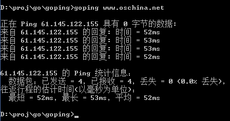

引言
关于各种语言实现Ping已经是大家喜闻乐见的事情了，网络上利用Golang实现Ping已经有比较详细的代码示例，但大多是仅仅是实现了Request过程，而对Response的回显内容并没有做接收。而Ping程序不仅仅是发送一个ICMP，更重要的是如何接收并进行统计。
下面是网络上几篇关于Ping的实现代码：
https://github.com/paulstuart/ping/blob/master/ping.go
http://blog.csdn.net/gophers/article/details/21481447
http://blog.csdn.net/laputa73/article/details/17226337
本文借鉴了第二个链接里面的部分代码。
准备
- 安装最新的Go
由于Google被墙的原因，如果没有VPN的话，就到这里下载：
http://www.golangtc.com/download - 使用任意文本编辑器，或者LiteIDE会比较方便编译和调试，下面是LiteIDE的下载地址
https://github.com/visualfc/liteide
编码
要用到的package：
1 | import ( |
- 使用Golang提供的net包中的相关函数可以快速构造一个IP包并自定义其中一些关键参数，而不需要再自己手动填充IP报文。
- 使用encoding/binary包可以轻松获取结构体struct的内存数据并且可以规定字节序（这里要用网络字节序BigEndian），而不需要自己去转换字节序。之前的一片文中使用boost，还要自己去实现转换过程，详见：关于蹭网检查的原理及实现
- 使用container/list包，方便进行结果统计
- 使用time包实现耗时和超时处理
ICMP报文struct：
1 | type ICMP struct { |
Usage提示：
1 | arg_num := len(os.Args) |
注意这个ping程序，包括之前的ARP程序都必须使用系统最高权限执行，所以这里先给出提示，使用time.Sleep(5e9)，暂停5秒，是为了使双击执行者看到提示，避免控制台一闪而过。
关键net对象的创建和初始化：
1 | var ( |
net.DialIP表示生成一个IP报文，版本号是v4，协议是ICMP（这里字符串ip4:icmp会把IP报文的协议字段设为1表示ICMP协议），
源地址laddr可以是0.0.0.0也可以是自己的ip，这个并不影响ICMP的工作。
目的地址raddr是一个URL，这里使用Resolve进行DNS解析，注意返回值是一个指针，所以下面的DialIP方法中参数表示没有取地址符。
这样一个完整的IP报文就装配好了，我们并没有去操心IP中的其他一些字段，Go已经为我们处理好了。
通过返回的conn *net.IPConn对象可以进行后续操作。
defer conn.Close() 表示该函数将在Return时被执行，确保不会忘记关闭。
下面需要构造ICMP报文了：
1 | icmp.Type = 8 |
仍然非常简单，利用binary可以把一个结构体数据按照指定的字节序读到缓冲区里面，计算校验和后，再读进去。
检验和算法参考上面给出的URL中的实现：
1 | func CheckSum(data []byte) uint16 { |
下面是Ping的Request过程，这里仿照Windows的ping，默认只进行4次：
1 | fmt.Printf("\n正在 Ping %s 具有 0 字节的数据:\n", raddr.String()) |
“具有0字节的数据”表示ICMP报文中没有数据字段，这和Windows里面32字节的数据的略有不同。
conn.Write方法执行之后也就发送了一条ICMP请求，同时进行计时和计次。
conn.SetReadDeadline可以在未收到数据的指定时间内停止Read等待，并返回错误err，然后判定请求超时。否则，收到回应后，计算来回所用时间，并放入一个list方便后续统计。
注释部分内容是我在探索返回数据时的代码，读者可以试试看Read到的数据是哪个数据包的？
统计工作将在循环结束时进行，这里使用了defer其实是希望按了Ctrl+C之后能return执行，但是控制台确实不给力，直接给杀掉了。。
1 | defer func() { |
统计过程注意类型的转换和格式化就行了。
全部代码就这些，执行结果大概是这个样子的：

注意每次Ping后都没有”休息”，不像Windows或者Linux的会停顿几秒再Ping下一轮。
收尾
Golang实现整个Ping比我想象中的还要简单很多，静态编译速度是十分快速，相比C而言，你需要更多得了解底层，甚至要从链路层开始，你需要写更多更复杂的代码来完成相同的工作，但究其根本，C语言仍然是鼻祖，功不可没，很多原理和思想都要继承和发展，这一点Golang做的很好。